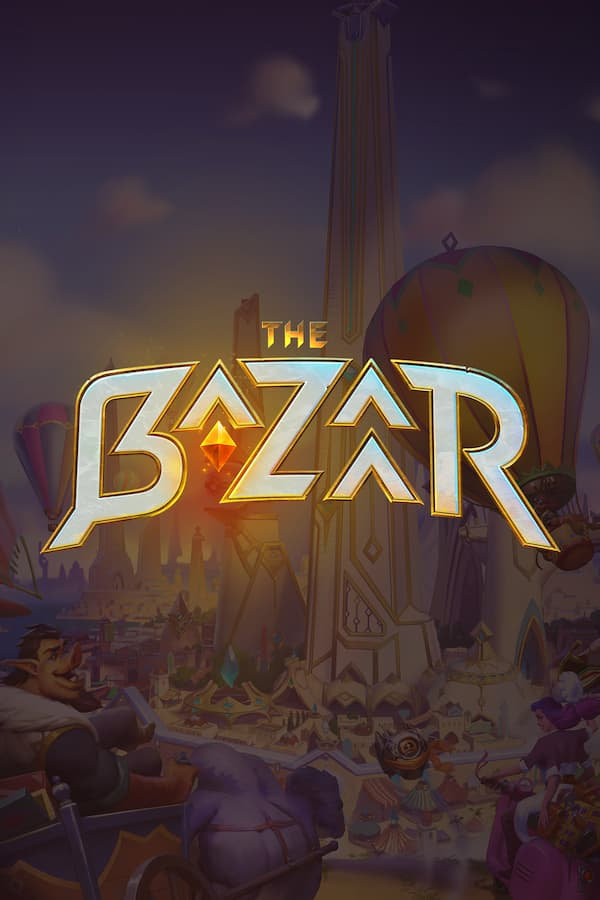

The Bazaar
Every archived year-end list appearance, including placement and points earned.
About the Game
Welcome to The Bazaar, a hero-building strategy game set in a vibrant, ever-changing galactic marketplace. Collect exotic tools and weapons and strategically assemble them on your board, then unleash your arsenal against fantastical creatures and rival players! Hundreds of fully-voiced, unique encounters await adventurers looking to find fortune in The Bazaar.Master the meta or make your own.Choose from an expanding roster of heroes, each with their own distinct play-style, over 100 unique items, and an ever-growing catalog of content. Equip weapons, skills, tools, potions, dinosaurs, and more to construct the ultimate strategy–then watch it destroy your enemies! With hundreds of items and combinations to discover, every run is a unique puzzle to be solved. Choose wisely! Plan your adventure on your own time. You'll face real players during their journey, turning encounters into a unique combination of planning and creativity, all without worrying about real-time timers. Whether you're building your board around one powerful item to crush your opponents in a single blow, or orchestrating elaborate combos, The Bazaar rewards creativity and risk-taking. No two runs are the same, and mastery comes from learning to adapt on the fly.There’s more to the Bazaar than combat! Each hero has their own journey, and you’ll meet a sprawling cast of memorable characters along the way, from friendly merchants to robot revolutionaries to powerful entities with motives unknown–all fully voiced in a rich and atmospheric environment. The Bazaar is a surreal crossroads of magic, machines, and ancient secrets, a high-tech fantasy world packed with deep lore that you’ll uncover one run at a time.
| Developer | Tempo |
|---|---|
| Publisher | Tempo |
| Platforms | macOS, PC |
MultiplayerSci-fiFantasyTacticalPvPFamily FriendlyColorfulcombatFuturisticPvEEconomyChoose Your Own Adventure
Where to Buy
Game information provided by RAWG.
Points by Year
List History
| Year | Source | List | Placement | Points |
|---|---|---|---|---|
| 2025 | NPR | The best games of 2025, picked by NPR's staff | Unranked | 1 |